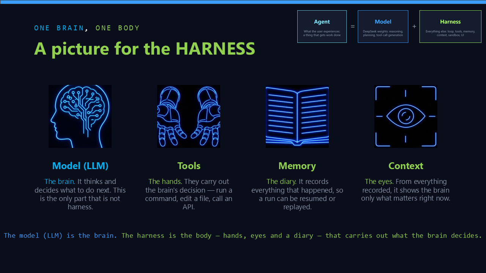
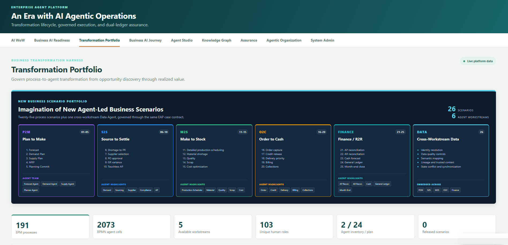

Now · open
The layer that makes an agent's work acceptable to an enterprise, not just executable.
The industry has settled on one formula: an agent is a model plus a harness. That harness is now a real engineering discipline — context construction, tools, memory, evaluation — and it is well covered by people better resourced than me. I work on the two terms it leaves out, because they are the two that decide whether anything reaches production:

Mandate is who may say yes — by name, in what scope, for which version, and with what consequence. A gate is where that authority gets exercised, and its default is always HOLD: the absence of an explicit, authorised approval is never permission.
Ledger is why two books are needed rather than one. What happened, and who authorised it, must be separately provable — otherwise the system is attesting to itself, which is not evidence. The assurance ledger is hash-chained and reconciled against the business ledger, so "it ran" and "it can be proven" are two checkable claims instead of one claim by an interested party.
The repository carries the definition, eleven short documents, and a small reference implementation — about 1,370 lines of dependency-free Python with 83 tests — so the argument is falsifiable rather than merely stated.

It is not a framework, not a runtime, and not a platform you buy. It is a pattern, a definition, and an executable sketch of the pattern.